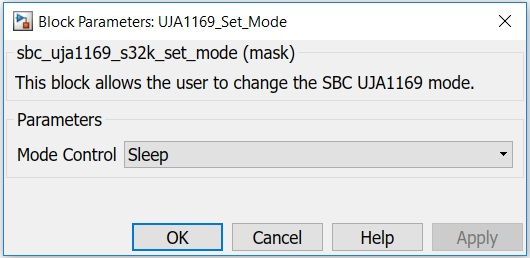

SBC Set Mode Block
SBC Set Mode performs software transition from one mode to another. The transition is achieved by writing to mode control register. The event capture registers are cleared before device is moved to sleep mode.
Block Image

Inputs:
- None
Outputs:
- None
Parameters and Dialog Box
The block has one parameter:
Mode Control
In this mode, all the hardware on the device is available and can be activated. Voltage regulator V1 is enabled to supply the microcontroller. The CAN interface can be configured to be active and thus to support normal CAN communication. Depending on the SPI register settings, the watchdog may be running in Window or Timeout mode and the V2/VEXT output may be active.
Standby mode is the first-level power-saving mode of the UJA1169, offering reduced current consumption. The transceiver is unable to transmit or receive data in Standby mode. The SPI remains enabled and V1 is still active; the watchdog is active (in Timeout mode) if enabled. The behavior of V2/VEXT is determined by the SPI setting.
Sleep mode is the second-level power-saving mode of the UJA1169. The difference between Sleep and Standby modes is that V1 is off in Sleep mode and temperature protection is inactive. Any enabled regular wake-up via CAN or WAKE or any diagnostic wake-up event will cause the UJA1169 to wake up from Sleep mode. The behavior of V2/VEXT is determined by the SPI settings. The SPI and the watchdog are disabled. Autonomous bus biasing is active.
This block is using lpit0 channel 0 to feed the watchdog
Block Dependency
- Configure the UJA1169 Configuration block.
- Configure the LPSPI Configuration block.
Block Miscellaneous Details
- None
* To get more information refer to Hardware Manual documentation.